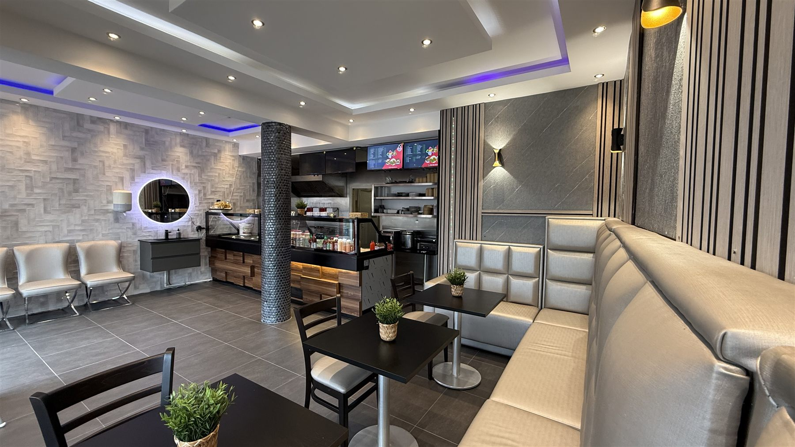
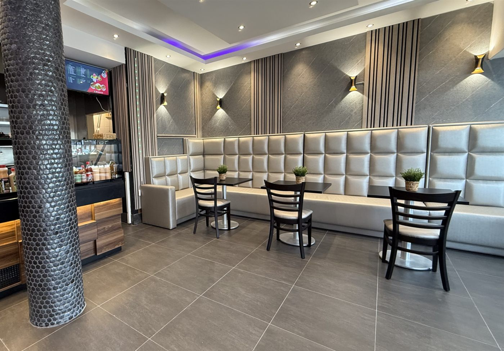

Molenweg 175, Nijmegen
Swiet Kitchen
Surinaamse & Marokkaanse keuken
Van stevige stoofschotels tot hartige roti en aromatische broodjes, bereid met passie en traditie.
- Elke dag open 14:00 tot 21:00
- Halal gecertificeerd
- Dineren, afhalen en catering
Ontdek de smaak van traditie
Geniet van de rijke en levendige smaken van de Surinaamse en Marokkaanse keuken. Bij Swiet Kitchen brengen we u een mix van traditionele recepten, verse ingrediënten en oprechte gastvrijheid.
Of u nu zin heeft in een troostende kom saoto soep, een hartige roti of een smaakvolle pom: elk gerecht is met zorg bereid om u mee te nemen op een culinaire reis.
Bij SwietKitchen serveren we niet zomaar eten, maar serveren we herinneringen, gekruid met traditie en met liefde bereid.

Waarom Swiet Kitchen?
Authentieke smaken
Ervaar de echte smaak van Surinaamse en Marokkaanse tradities.
Verse ingrediënten
Wij gebruiken uitsluitend de beste, hoogwaardige ingrediënten in elk gerecht.
Halal-gecertificeerd
Geniet van heerlijke maaltijden bereid volgens halalnormen.
Voor elke gelegenheid
Of het nu gaat om dineren in het restaurant, afhalen of catering: wij regelen het voor u.


Sfeerbeelden
Catering voor uw speciale gelegenheid
Til uw evenementen naar een hoger niveau met authentieke Surinaamse en Marokkaanse smaken. Onze cateringservice brengt traditionele gerechten zoals roti, pom en aromatische curry’s naar uw speciale gelegenheden.
- Aangepaste menu’s afgestemd op uw evenement
- Verse, hoogwaardige ingrediënten in elk gerecht
- Professionele service voor bruiloften, zakelijke evenementen en bijeenkomsten
Laat ons het eten verzorgen terwijl u geniet van het moment. Vraag naar onze speciale aanbieding voor uw gelegenheid.
“Omdat uw speciale momenten een buitengewone smaak verdienen!”
Kom langs of bel ons
Eet ter plaatse, neem af of organiseer uw volgende evenement.
Openingstijden
| Maandag t/m zondag | 14:00 – 21:00 |
|---|
- Adres
- Molenweg 175
6543 VB Nijmegen - Telefoon
- 024 206 37 79
- info@swietkitchen.nl